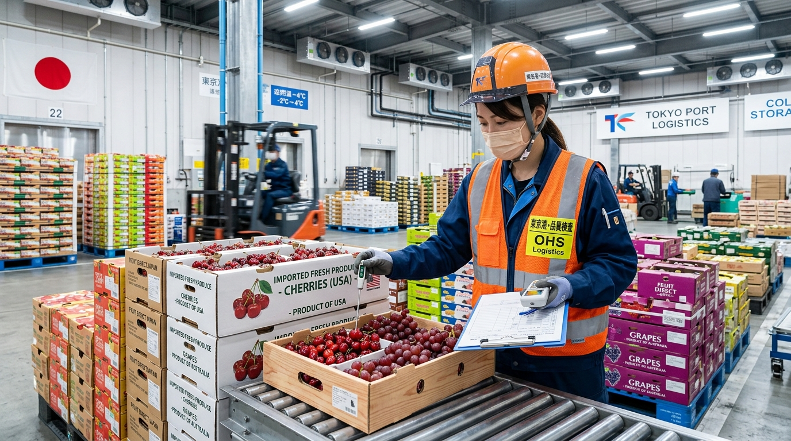
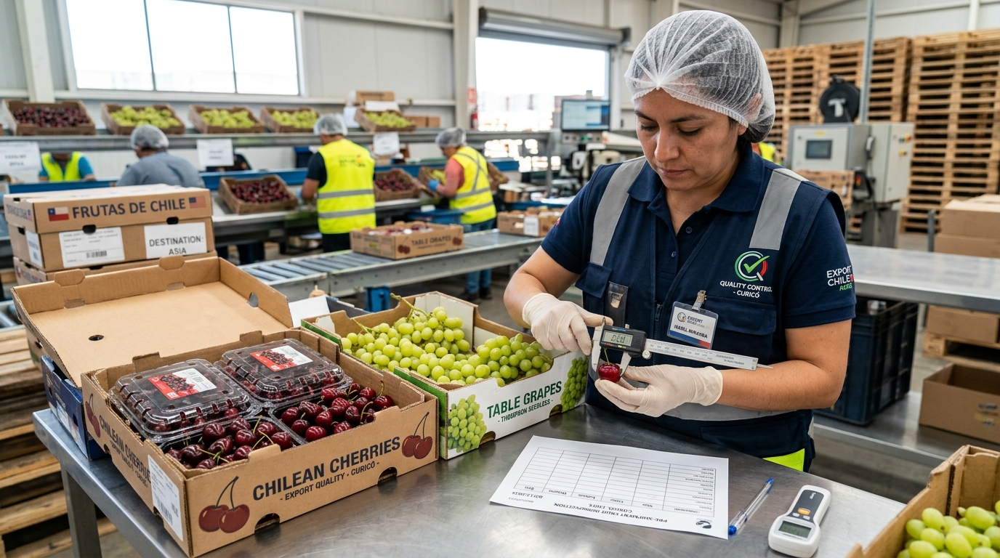

Protecting Your Shipments. Documenting Product Condition. Supporting Better Trade Decisions.
Nova Fresh International provides independent commercial produce inspection services involving Japan destination arrivals and pre-shipment inspection services for fresh produce originating in Chile.
International fresh produce trade involves long transit times, complex logistics, and perishable products. Objective inspection provides vital documentation at key points in the supply chain.
Produce moving across ocean routes or long airfreight corridors is subject to environmental changes, vibration, and multi-week voyages.
Verifying product pulp temperatures and container conditions ensures thermal management was maintained within specifications.
Ensuring sizing, caliber, grade, maturity, color, and packaging match agreed buyer and seller commercial contracts.
Creating objective photographic and written evidence at a precise handoff point to eliminate ambiguity and support commercial clarity.
Nova Fresh International offers specialized independent commercial produce inspection services in key international locations.

Nova Fresh International provides independent commercial inspection and quality documentation for fresh produce arriving in Japan from international origins.

Nova Fresh International coordinates independent pre-shipment inspection of fresh produce in Chile before export shipment.
Helping recover product value when produce shipments arrive with quality, presentation, or packaging issues.
When fresh produce arrives with damaged packaging, presentation issues, or other conditions that may affect its ability to reach the market, Nova Fresh can help coordinate reconditioning and repacking services where practical.
The objective is to help maximize usable product, improve presentation, and reduce unnecessary losses when a shipment can be commercially recovered.
Independent produce inspection provides clear, actionable quality records for key stakeholders across international trade corridors.
Pre-shipment inspection provides detailed documentation before produce leaves the country of origin, giving importers clarity prior to ocean transit.
Destination inspection upon arrival in Japan provides objective documentation that assists both overseas suppliers and Japanese buyers with critical commercial decisions.
Documenting product condition at both origin and destination provides complete visibility into quality changes during international transit and handling.
By capturing objective quality findings prior to container sealing in Chile and upon port discharge in Japan, produce trading partners gain clear evidence to analyze cold chain performance, transit impact, and exact condition changes.
Commercial inspections can evaluate a full spectrum of produce quality, physical condition, packaging, and cold chain parameters based on pre-agreed customer scopes.
A straightforward, efficient workflow from initial shipment notice to final inspection report delivery.
Tell us commodity, origin, destination, variety, volume, shipment date, location, and specific concerns.
Agree on specific quality criteria, sampling method, testing, and parameters to be inspected and documented.
Inspection is scheduled at the agreed facility, port terminal, or warehouse, subject to access and availability.
Findings documented through detailed written observations, pulp temperature readings, and clear photographs.
Customer receives a timely, professional PDF inspection report containing objective findings and photo log.
Fresh produce is an inherently perishable commodity. Product condition naturally evolves over time due to transportation duration, temperature management, handling practices, storage conditions, and atmospheric exposure.
Our inspection services deliver unbiased, point-in-time facts so importers, exporters, and buyers can navigate commercial discussions with accurate data rather than assumptions.
While Nova Fresh International is active in international produce market development and trade-related activities, our produce inspection service is structured completely separate from commercial trading transactions.
This separation guarantees that inspection observations are documented strictly independently of buying and selling interests.
Nova Fresh International's commercial inspection services provide independent quality documentation for commercial trade purposes. Nova Fresh International inspections DO NOT replace or constitute any of the following official functions:
Independent quality reports serve as a vital commercial asset for international fresh produce businesses.
Know more about the actual physical condition, temperature, and quality of a shipment at origin or arrival.
Provide buyers and sellers with objective, neutral information to discuss shipment outcomes constructively.
Create high-resolution photographic evidence and precise written records when defects or condition concerns arise.
Provide objective point-in-time documentation that assists when evaluating quality or condition adjustments.
Track quality consistency and arrival condition across multiple shipments and suppliers over time.
Clear third-party documentation helps commercial partners resolve issues professionally based on facts rather than assumptions.
Produce quality documentation is one integral component of international produce commerce. Our inspection services are structured specifically to integrate into broader global produce logistics and commercial operations.
Our specialized inspection team focuses on critical origin and destination hubs in global fruit trade.
Primary destination-market inspection service for fresh produce arriving in Japan from international supply origins worldwide.
Current origin-inspection service focused on fresh produce originating in Chile and inspected at packing facilities prior to container departure.
Common questions regarding independent commercial produce inspection services.
Tell us about your shipment. Provide commodity details, origin, destination, timing, and specific quality concerns.
International Produce Market Development & Independent Inspection Services